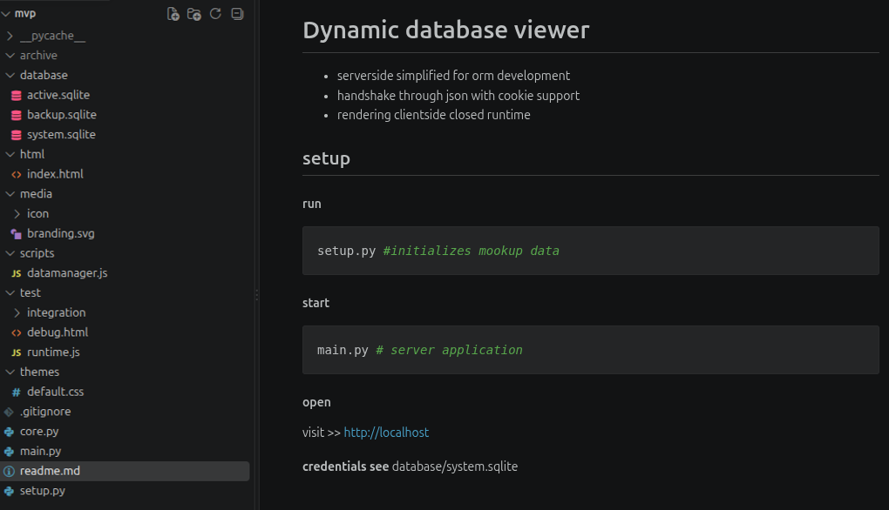
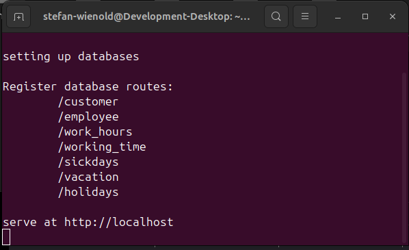
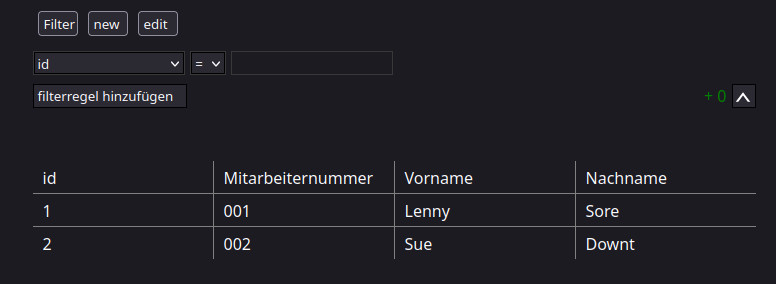

Database-manager
Preview

Description
Research project for dynamic server client data managment
with sqlLite and clientside data interpretation.
It serves as foundation for further exploration
on delivering and serving data with webgpu-engine.
with sqlLite and clientside data interpretation.
It serves as foundation for further exploration
on delivering and serving data with webgpu-engine.
Features
local network secure server

dynamic database viewer

- callback network comunication
- privat scoped data managment
- localization
- sessions